| 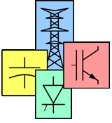 |
| Welcome! |
| About us |
| What is FACTS? |
| What is HPFC? |
| Downloads |
| Contact us |
| Last Updated |
 |
 |
The Symmetrical
Hybrid
Power
Flow
Controller
A new technology for Flexible AC Transmission (FACTS)
The Hybrid Power Flow Controller
The Hybrid Power Flow Controller uses two equally rated voltage-sourced converters to upgrade the functionality of the existing switched capacitors or static VAR compensators (SVCs). Since static converters are used together with passive devices, the power flow controller can be considered hybrid and it is therefore named a "Symmetrical Hybrid Power Flow Controller" (HPFC).
The work in my thesis [1] demonstrates that by using appropriate converter control the functionality of switched capacitors and SVCs can be changed from reactive power support to the generalized power flow control – the functionality commonly associated with the UPFC. The key benefit of the new topology is that it fully utilizes existing equipment and thereby the required ratings of the additional converters are substantially lower than the ratings of the comparable UPFC.
Before we start – some of you might prefer to read a paper than to navigate the pages. To view or download a pdf copy of the HPFC paper presented at the 2006 PES General Meeting in Montreal click here.
Table of Contents
- Proposed Topology
- Equivalent Circuit and Operating Constraints
- A Glance at the Big Picture
- Steady State Operation
- The Notion of Reachable Sets
- The P-delta Curves of the HPFC
- Alternative HPFC Topologies
- References
1 Proposed Topology
A block diagrammatic view of a typical HPFC application is shown in Fig. 1. The HPFC is installed at some point along the transmission line connecting two electrical regions characterized by their The'venin's equivalent voltage sources VS and VR. The line is thereby divided into two segments represented by the equivalent reactances XS and XR. Indices "S" and "R" identify "sending" and "receiving" end/segment of the line.
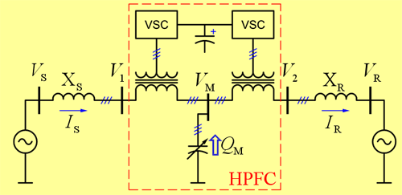
| Fig. 1 | Hybrid Power Flow Controller (HPFC) - Topology |
Central to the HPFC's topology is the shunt connected source of reactive power – shown as the variable capacitance in Fig. 1. Next, there are two voltage–sourced converters (VSCs) connected to the associated line segments in series using coupling transformers. The converters share a common DC circuit, coupling each other's DC terminals.
By controlling the magnitudes and angles of voltages supplied by the converters, the flow of active power through the line and the amounts of reactive power supplied to the corresponding line segments can be simultaneously and independently controlled. The control of the shunt device is coordinated with the control of converters to supply the bulk of the total required reactive power.
2 Equivalent Circuit and Operating Constraints
A simplified single phase equivalent circuit – including the HPFC, the interconnected electrical regions, and the corresponding line segments – is shown in Fig. 2(a).
The variable capacitance, labeled BM, represents the controllable shunt connected variable susceptance. The range of values this parameter can assume depends on the installed power components; in general case it can be positive (capacitive), zero, or negative (inductive).
Voltage sources VX and VY represent the high voltage equivalents of voltages generated by the VSCs. The common DC circuit of the VSCs is represented by the capacitor CDC, and this capacitor is charged or discharged based on the difference of active powers coupled by the converters.
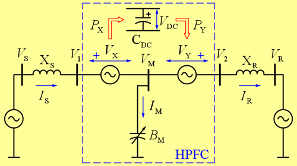
(a)
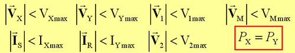
(b)
| Fig. 2 | HPFC – Equivalent circuit and operating constraints |
This circuit is subject to many constraints – and we summarized them in Fig. 2(b).
First, converters' voltage ratings impose magnitude limits on VX and VY. Additionally, magnitudes of IS and IR are limited, as these currents flow through the converters' switches. Then, line insulation requires that magnitudes of voltages V1 and V2 are limited, and voltage ratings of the shunt susceptance require limited magnitude of VM. And finally, in order to operate the converters, we require that VDC is maintained at a steady value, so in steady state PX has to be equal PY.
3 A Glance at the Big Picture
Before we get too deep into the analysis, let us sum up what we have this far... We introduced the new topology and represented it with a reasonably simple equivalent circuit. Furthermore, we identified and explained the constraints applicable to this circuit.
So, things are beginning to look quite technical – and we fear that we may start to loose some of the audience. To postpone that, let us take a quick look at the big picture, and explain what we are setting out to do...
We are proposing to install this fancy new HPFC device on a transmission line, and use it to control the flow of power through the line. So, to sell these things, we will have to approach someone that owns a transmission line (or runs a transmission system) and say: Look, you install such and such equipment, and you achieve such and such range of control for power flow... The equipment will cost you some money, but you will get this wonderful flexibility to run your line harder, transfer more power, and make more money.
The conclusion? To sell these things, we have to be able to quantify the benefits they provide, i.e., we have to be able to compute the range of achievable power transfer given the line parameters and the proposed equipment ratings.
Ok! We are now ready to return to the technical discussion...
4 Steady State Operation
Our ultimate objective is now clear – solve the range of power transfer given the line parameters and the converters' ratings. For starters, however, let us discuss a smaller problem – solving for one "viable" operating point. Following is the problem statement in technical terms...
We seek to find voltage vectors VX and VY and a value for scalar variable BM, such that a specified amount of power (Pref) is transferred through the line and that the resulting operating point satisfies all constraints listed in Fig. 2(b). We will refer to such solution as to a "viable" steady state operating point resulting in power transfer P=Pref. The operating point is "viable" if and only if it satisfies the constraints of Fig. 2(b).
Let us look at this problem more closely... A scholarly approach to solving these sorts of problems is to express the desired output quantities (i.e., P) and variables subject to constraints (i.e., PX−PY, |IS|, |IR|, |V1|, |V2|, and |VM|) as functions of control variables (VX, VY, BM); and then, to use numerical iterations to achieve the desired solution. It can be observed that five control variables (two vectors and one scalar) are at disposal to solve a system of two nonlinear equations, (P=Pref, and PX−PY=0). The existence of additional degrees of freedom gives rise to a notion of optimization, and qualifies the problem of selecting viable operating points into the class of problems of nonlinear constrained optimization.
Well, you say, this does not look good anymore!
I now have to iterate to find each solution; then – when I find it – it may or may not be a global optimum, and I don't know how to check if it is. And – to top it all off – we are talking about one solution here, and we need an optimal solutions for each pair of vectors VS and VR (varying system conditions).
But don't give up just yet! Because the solutions can be found directly (without iterations) – we just need to use a witty approach. Following are the two key steps that unlocked the puzzle.
First, we abandoned the objective of seeking the solutions in power space (i.e., forcing that P=Pref), and went to find viable solutions in the space of line currents (IS, IR).
And second, we found a geometric interpretation for the constraint of power balance (PX=PY), and based on it were able to directly select the currents (IS, IR) that meet this condition.
With the above two steps combined, it was possible to directly solve for minimum and maximum power transfer, and to observe effects of all constraints. Furthermore, we could study collective or individual impact of the constraints with virtually no penalty in processing complexity.
4.1 Geometric Interpretation of Power Balance
The formulation of power balance given by PX=PY is not convenient as it involves both the control (VX and VY) and the controlled variables (IS and IR). A formulation of the power balance constraint invariant to changes in converter voltages is therefore preferable. Referring to Fig. 3(a) the condition given by PX=PY stipulates the constant stored energy in the DC capacitor. Furthermore, total energy stored in the three–phase susceptance is, in steady state, constant. Therefore, if losses are neglected, condition PX=PY may be replaced by the condition P1=P2. While improved, this formulation still does not provide the desired invariance as it depends on voltage vectors V1 and V2. The final formulation is obtained by recognizing that if line segments are lossless, PS=P1 and P2=PR. Hence, for a lossless system the condition given by PX=PY can be expressed as PS=PR. The complete transition is recapitulated in Fig, 3(b).
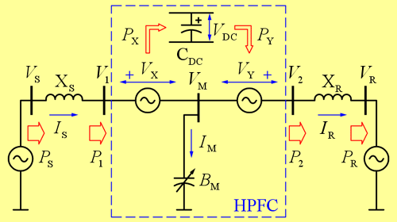
(a)
(b)
| Fig. 3 | HPFC – Transformation of condition of converters' power balance |
It is advantageous to provide a geometric interpretation for this condition. Power is proportional to scalar product of voltage and current. Hence, for a given vector VS, sending end power PS is proportional to the projection of IS onto VS. Therefore, as depicted in Fig. 4, current vectors IS1 and IS2 transfer the same sending end power, as would any other current vector that has its tip on the same line perpendicular to VS. This line may be considered a "constant power line".
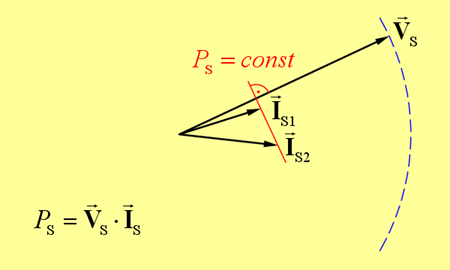
| Fig. 4 | Constant power line |
Hence, the constant power line gives the loci of solutions for current IS that couple specified value of active power PS from the voltage source VS. An analogous constant power line representing solutions for IR can be constructed perpendicular to voltage vector VR. The condition of power balance between the converters can hence be expressed as the requirement to seek the solutions for vectors IS and IR that reside on the specified matching pair of constant power lines. A pair of constant power lines such that PS=PR will be called "equal power lines".
4.2 Solving Steady State Operating Points
Fig. 5(a)–(d) illustrates the steps of the procedure. Voltage vectors VS and VR, and equal power lines corresponding to the desired power flow PR(=PS) are shown in Fig. 5(a). Current vectors IS and IR are chosen so that their tips lie on these equal power lines. There is hence one degree of freedom in choosing the location for each vector. This degree of freedom can be viewed as freedom to select the amount of reactive power supplied from the corresponding line end. Specifying QS selects a unique IS, and specifying QR selects a unique IR.
Voltages V1 and V2 are obtained by subtracting and adding voltage drops across the respective line segments, as shown in Fig. 5(b).
Next, IM and VM are obtained as shown in Fig. 5(c).
Finally, VX and VY are found as shown in Fig. 5(d).
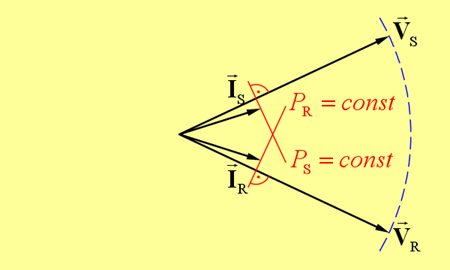
(a)
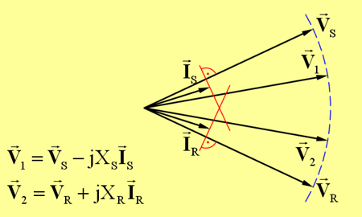
(b)
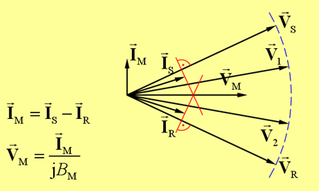
(c)
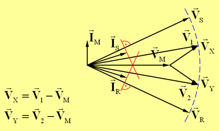
(d)
| Fig. 5 | A procedure for solving steady state operating points based on specified PR(=PS), QS, and QR |
4.3 Representative Operating Modes of the HPFC
The above procedure can now be used to construct arbitrarily many vector diagrams. Some illustrative examples are given in Figs. 6–10.
Let us first discuss the operating point that we just found – we repeated it in Fig. 6. It corresponds to the power flow lower than the "naturally occurring" power flow. Notice that V1 and V2 are positioned in such way as to reduce the angular difference between the voltages VS and VR.
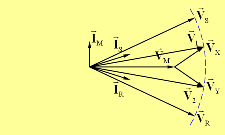
| Fig. 6 | HPFC used to reduce the power flow on a line |
The diagram in Fig. 7 demonstrates a possibility to maintain the same line currents for a step changed value of BM. Relative to Fig 6, lower value of BM was used. Now, if IS and IR are to be maintained at the same value, IM has to remain the same; hence VM must be increased. Fig. 7 demonstrates that this can be accomplished by reconfiguring the converters' voltages.
But, notice another thing here! Any line operating point (characterized by a pair of vectors IS and IR) may have infinitely many "internal operating points". Notice that if you can vary BM smoothly (as you can in an SVC), you will have a different triplet of vectors (VM, VX, VY) for each value of BM. This gives rise to optimizing the choice of internal operating point. Simply put, if we choose the value for BM intelligently, the converters' voltages can be reduced. Hence, the converters' ratings can be reduced, and the whole installation can be made more affordable. We will talk more about this later...
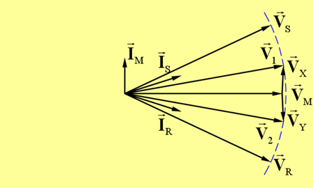
| Fig. 7 | Maintaining the same line operating point using step changed value of BM |
In Fig. 8 we demonstrate the decoupled control of reactive power supplied to the receiving end of the line. Converters' voltages are now configured so as to move IR along its constant power line and reduce the value of QR. Positions of vectors corresponding to Fig. 6 are shown in dashed blue lines to help quantify the difference.
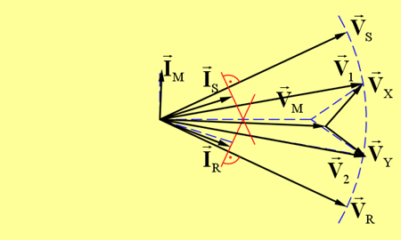
| Fig. 8 | Decoupled control of QR |
Increased power flow is shown in Fig. 9. Notice that V1 is now "below" and V2 "above" VM – resulting in the increased combined angle. As expected, the magnitudes of IS and IR are increased.
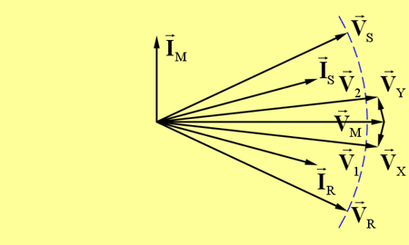
| Fig. 9 | Increased power flow |
Finally, we show the reversal of power flow in Fig. 10. Relative position of VM and IM indicates that BM is inductive in this case.
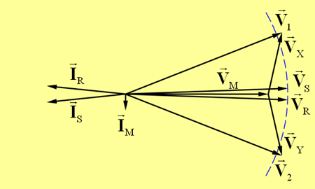
| Fig. 10 | Power flow reversal |
The steady state operating points presented by these vector diagrams show that the Hybrid Power Flow Controller has the qualitative characteristics of a UPFC. Specifically, it can control the flow of active power through the transmission line and supply the prescribed amounts of reactive power to sending and receiving segments of the line. But, while the UPFC uses a shunt connected converter, the HPFC needs only a shunt connected capacitor – a considerable advantage considering the converter costs. In the next few sections we will make a more detailed comparison between these two devices; let us start by introducing a framework for this comparison – the reachable sets.
5 The Notion of Reachable Sets
Recall our discussion in section 3 – we are selling these things based on the premise that they control the flow of power through the transmission line. Let us now take a closer look at the problem statement.
1) We will be looking at some transmission line with known parameters.
2) We will know the converter ratings that we can afford to install.
3) So, for a given set of system conditions – what can this setup do?
What are all possible solutions for IS and IR that satisfy all the constraints. We named this set the reachable set – because this is what can be reached "control wise" with the given equipment.
So, once we determine what the reachable currents are – it is easy to map that into the set of values for P, Q1 and Q2. And once we know the reachable sets, we can plot the P–δ curves to answer the question of power flow control.
This indirect approach of computing the reachable set in current space FIRST and then mapping it over to the PQQ space is a very important contribution of this work. Traditional approaches attempt to compute the PQQ set directly using iterations. In contrast, we solve the set of currents analytically and then simply map it over to the PQQ. This is shown pictorially in Fig. 11.
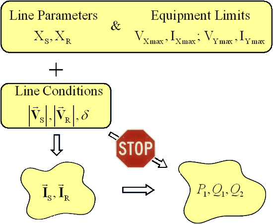
| Fig. 11 | Reachable set |
The process for computing reachable sets is discussed in detail in the thesis [1]. They are computed in a way that facilitates easy extraction of P–δ curves. The representative P–δ curves are shown and discussed in the next section.
6 The P–δ Curves of the HPFC
Consider first the P–δ curves shown in Fig. 12. It illustrates the range of power flow control for three discrete values of BM: positive, zero and negative. The positive value is four times larger than the negative one. Only the converter voltage limits were applied in the calculations.
Now, for each given value of BM we can control the power flow between the upper and the lower curve, and since the regions overlap, we conclude that if we also change BM, we can move from the lowest to the highest curve.
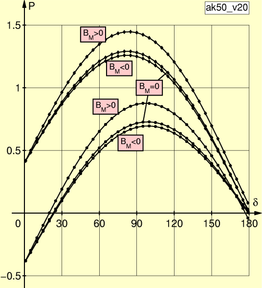
| Fig. 12 | HPFC P–δ curves (|VX| < 0.2 p.u. and |VY| < 0.2 p.u.) |
6.1 Effects of Limit Conditions and BM
The curves in Fig. 13 consider the terminal voltage limits and the converter current limits. The blue curve is the topmost curve from the previous graph and I included it here to show how drastic is the change due to the application of limits. You can notice here that there are no valid solutions at the large values of transmission angle. This comes from the fact that even if you apply all the voltage of the converters to oppose the voltage across the line, it still cannot limit the current and the converters must go into bypass.
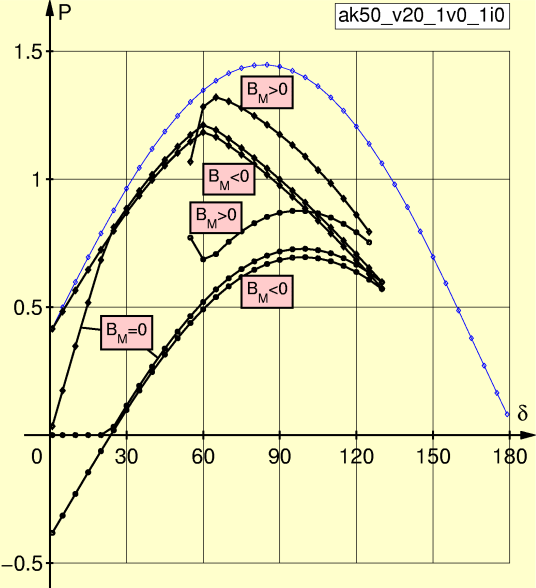
| Fig. 13 | HPFC P–δ curves:
|VX| < 0.2 p.u.
|VY| < 0.2 p.u. |V1| < 1.0 p.u. |V2| < 1.0 p.u. |IS| < 1.0 p.u.) |IR| < 1.0 p.u. |
Now in real applications, this positive value of BM will be arranged as a number of smaller capacitor banks; the corresponding graphs are shown in Fig. 14.
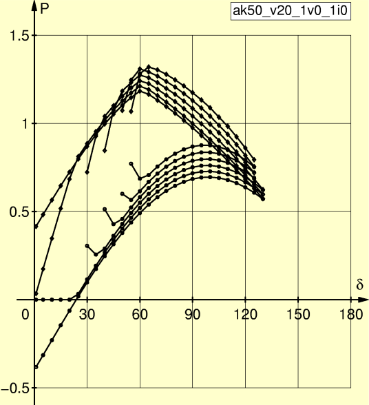
| Fig. 14 | HPFC P–δ curves:
|VX| < 0.2 p.u.
|VY| < 0.2 p.u. |V1| < 1.0 p.u. |V2| < 1.0 p.u. |IS| < 1.0 p.u.) |IR| < 1.0 p.u. |
If we now pick the best of the best segments of these curves and combine them – we achieve the graph of Fig. 15. Curve 1 is the maximized power flow, curve 2 is the minimized power flow, curve 3 is the power flow of the line compensated by an SVC, and curve 4 is the power flow on the uncompensated line.
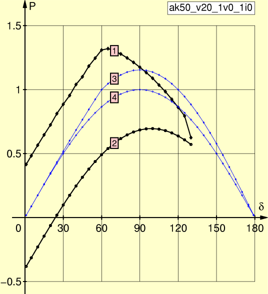
| Fig. 15 | HPFC P–δ curves:
|VX| < 0.2 p.u.
|VY| < 0.2 p.u. |V1| < 1.0 p.u. |V2| < 1.0 p.u. |IS| < 1.0 p.u.) |IR| < 1.0 p.u. |
Finally, Fig. 16 shows the plots of current magnitudes – the same labels are used as in the previous diagram. We see that current limiting is successfully applied.
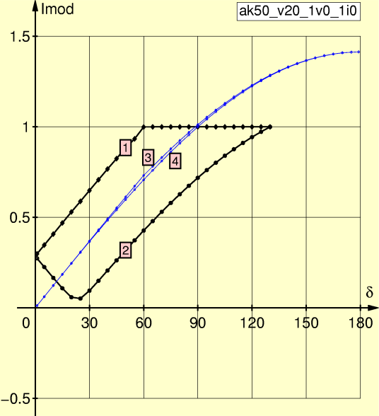
| Fig. 16 | HPFC P–δ curves:
|VX| < 0.2 p.u.
|VY| < 0.2 p.u. |V1| < 1.0 p.u. |V2| < 1.0 p.u. |IS| < 1.0 p.u.) |IR| < 1.0 p.u. |
6.2 Comparison of the HPFC with the UPFC
Prior to this work, there was no systematic method available for computing the reachable sets of a UPFC installed within the transmission line, while respecting equipment and line limits. The formalism developed here for studying the HPFC, namely introduction of equal power lines concept, can be successfully applied to solve the reachable sets of a UPFC. Details of the methodology inclusive of equipment and line limits are presented in [2].
The P–δ curves of the HPFC and the P–δ curves of the UPFC are compared in Fig 17. Curves 1 and 2 correspond to the line controlled by the HPFC to maximize and minimize the power flow, respectively; Curve 3 corresponds to the line compensated by the underlying SVC; Curve 4 corresponds to the power flow on the uncompensated line; Curves 5 and 6 correspond to the line controlled by the UPFC to maximize and minimize the power flow, respectively; and curve 7 corresponds to the power flow on the line compensated by the underlying STATCOM.
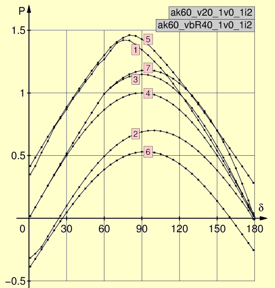
| Fig. 17 | Comparison of P–&delta curves – HPFC vs. UPFC |
The performance of the two devices is nearly equivalent for δ < 75°. At values of δ > 75° the UPFC offers somewhat better performance. This can be attributed to the fact that the STATCOM is a device superior to the SVC, as its ability to supply reactive power does not depend on terminal voltage.
Comparison of curves 3 and 7 illustrates this difference projected onto power flow. Another factor that contributes to better performance of the UPFC is the fact that it does not need to limit the magnitude of current IS. Nonetheless, this performance gain comes at a substantially higher price, as the UPFC uses a converter in place of an (often existing) SVC or switched capacitor.
This example illustrates that the HPFC offers the performance characteristics similar to those offered by the UPFC. Furthermore, in many cases the HPFC can be built using two identical converter–transformer subassemblies – a significant advantage for practical installations where a spare transformer may be required for redundancy.
7 Alternative HPFC Topologies
8 References
- J. Bebic, "A Symmetrical Hybrid Power Flow Controller", Ph.D. Thesis, University of Toronto, 2003.
- J. Bebic, P. W. Lehn, M. R. Iravani "P–δ Characteristics for the Unified Power Flow Controller – Analysis Inclusive of Equipment Ratings and Line Limits" IEEE Trans. Power Delivery, vol. 18, no. 3, pp. 1066–1072, July 2003.
Welcome | About us | What is FACTS? | What is HPFC? | Downloads | Contact us